Ecological Crisis Design course · Group project · School of Design
Conversion Lichens of City
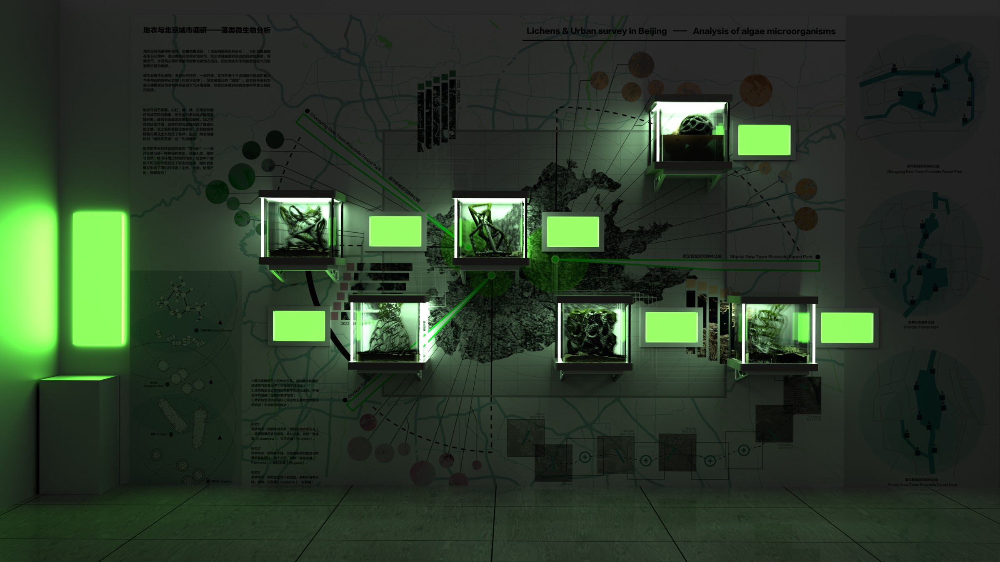
In the midst of urban life, do we still notice the scent of grass, or let our gaze linger on a leaf? As cities expand, nature can seem increasingly distant. This group project takes the city as a setting for human society and reconsiders our relationships with other living beings by reinterpreting the “language of flowers.”
Here, this language extends beyond human symbolism—the use of plants to express our own emotions and ideas. We turn instead to lichens, easily overlooked symbiotic life forms, and ask how their responses to surrounding conditions might be understood as subtle signals. Taking their perspective as a design starting point, we explore ways of attending to those signals within urban environments.
Through books, moving images, and physical installations, the project brings these responses into dialogue with human symbolic language. It reimagines how we understand lichens and asks what urban life might become if more-than-human perspectives could participate in the ways society operates.
Preliminary research
The research reconsiders the language of flowers through visual references, conceptual mapping, and studies of lichens in urban environments. These materials connect questions of symbolism and environmental response with a speculative approach to design.
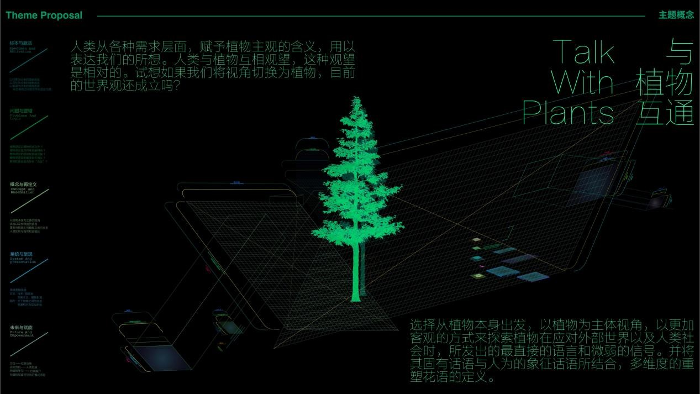
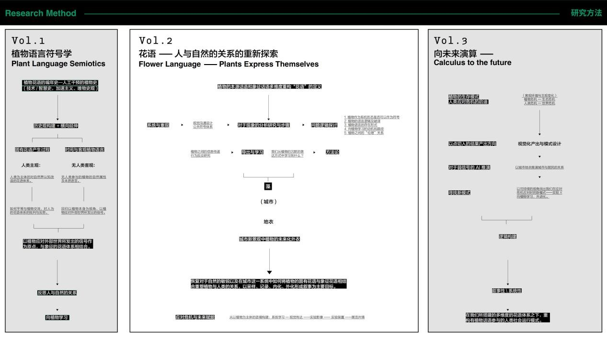
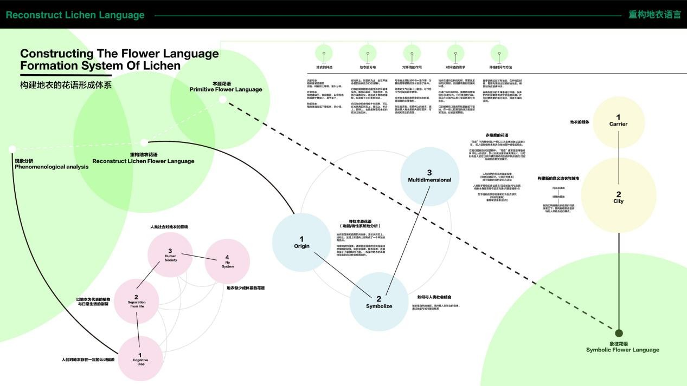
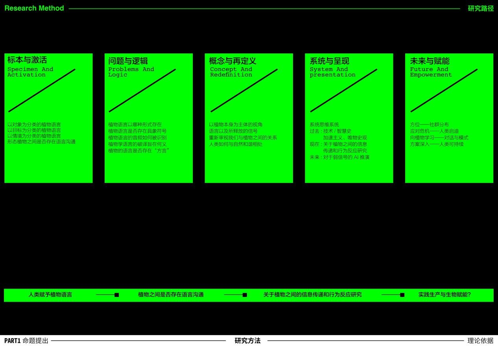
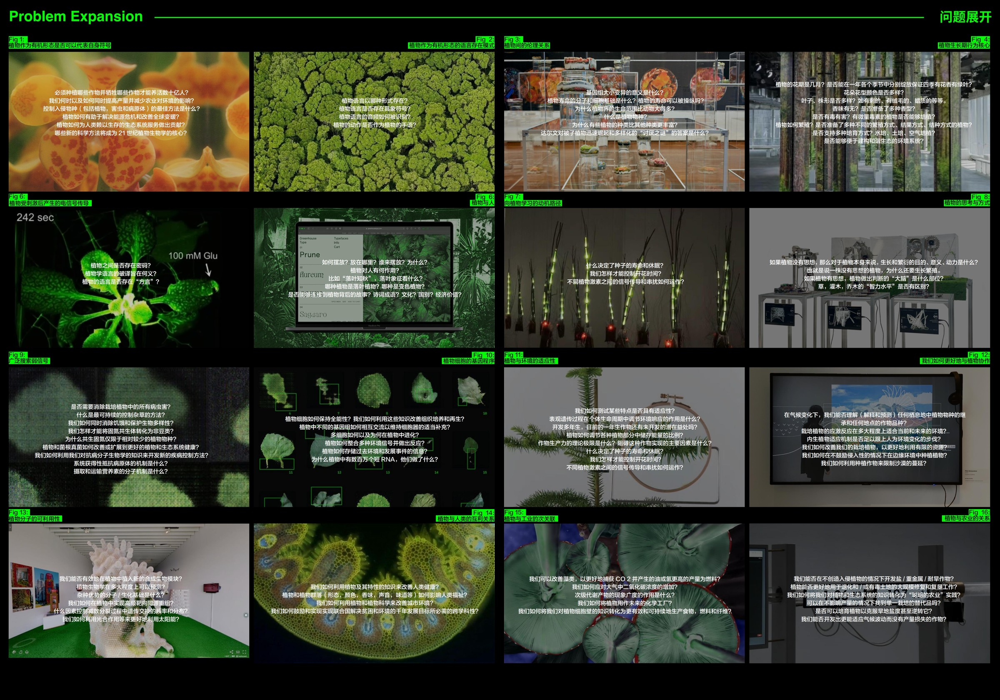
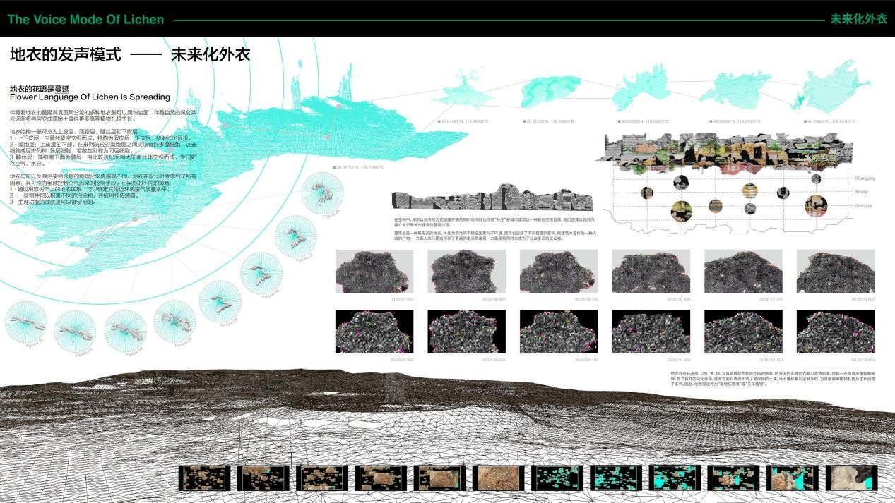
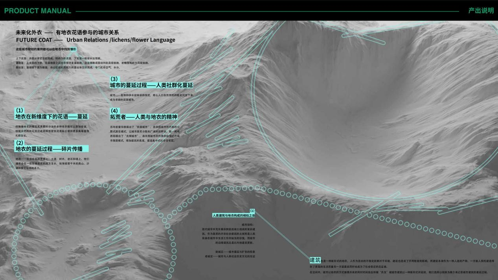
Course outcomes
The project brings its research into book design, moving images, and speculative installations. Through green-and-black graphics, layered pages, and imagined symbiotic structures, these outcomes explore how lichens might reshape our understanding of urban life.
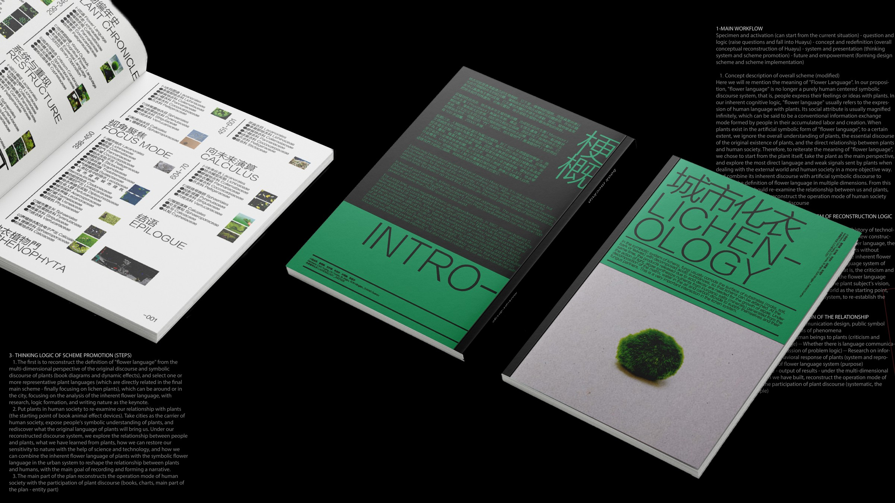
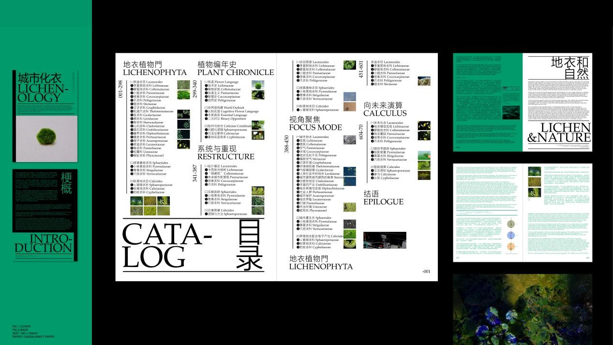
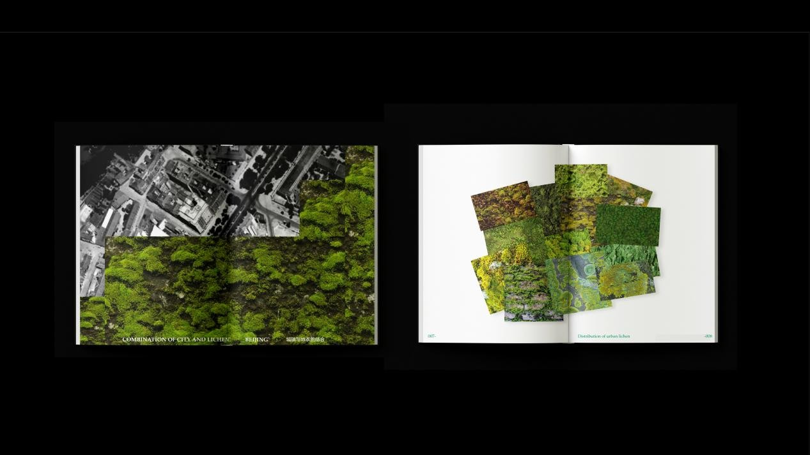
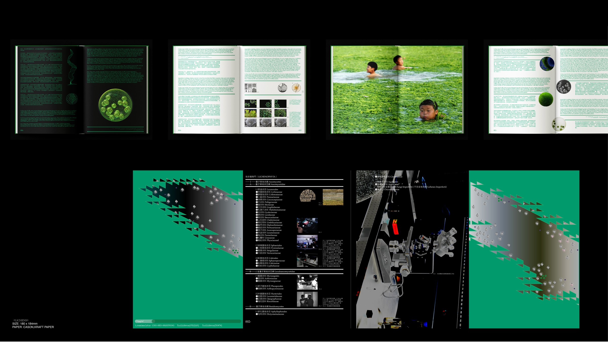
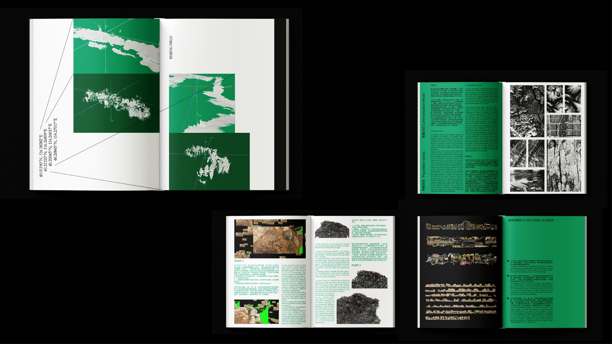
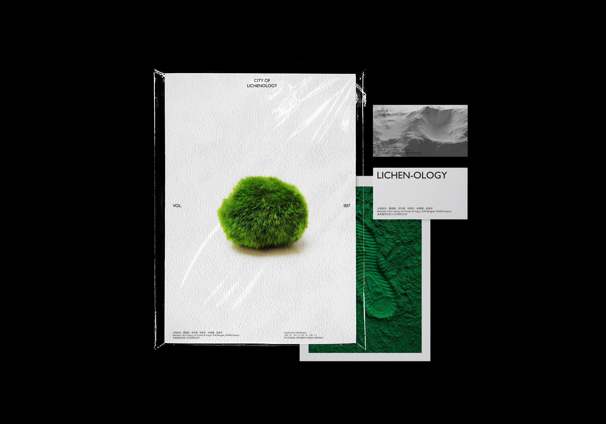
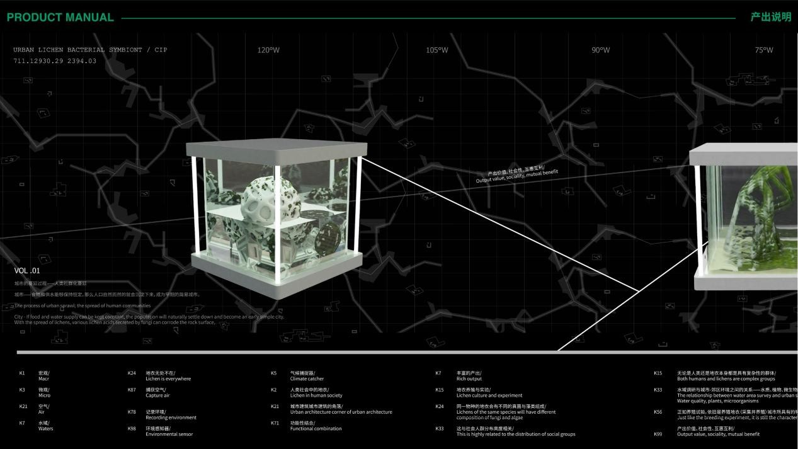
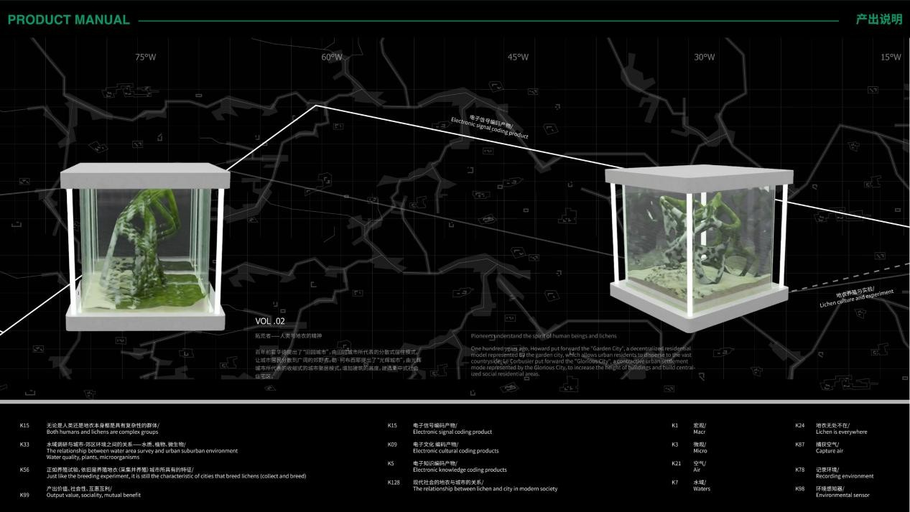
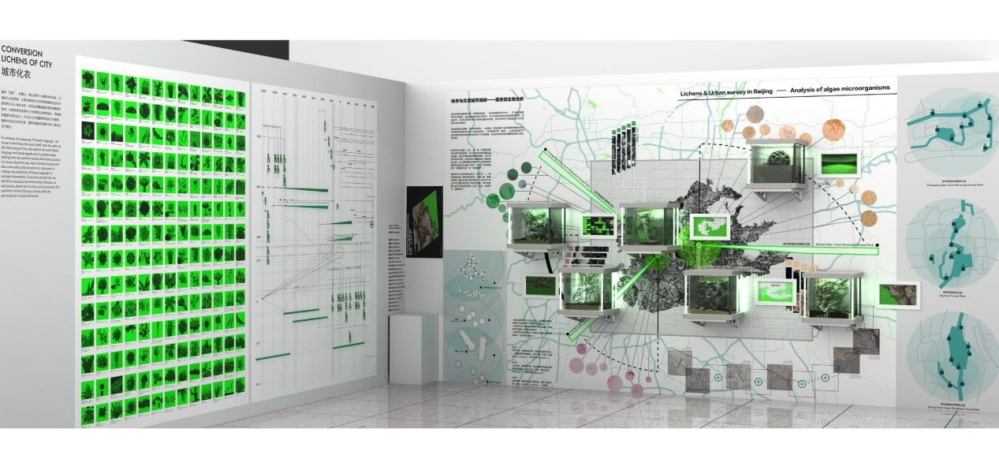